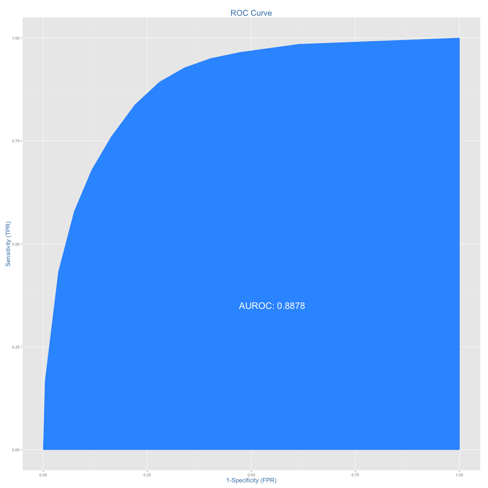
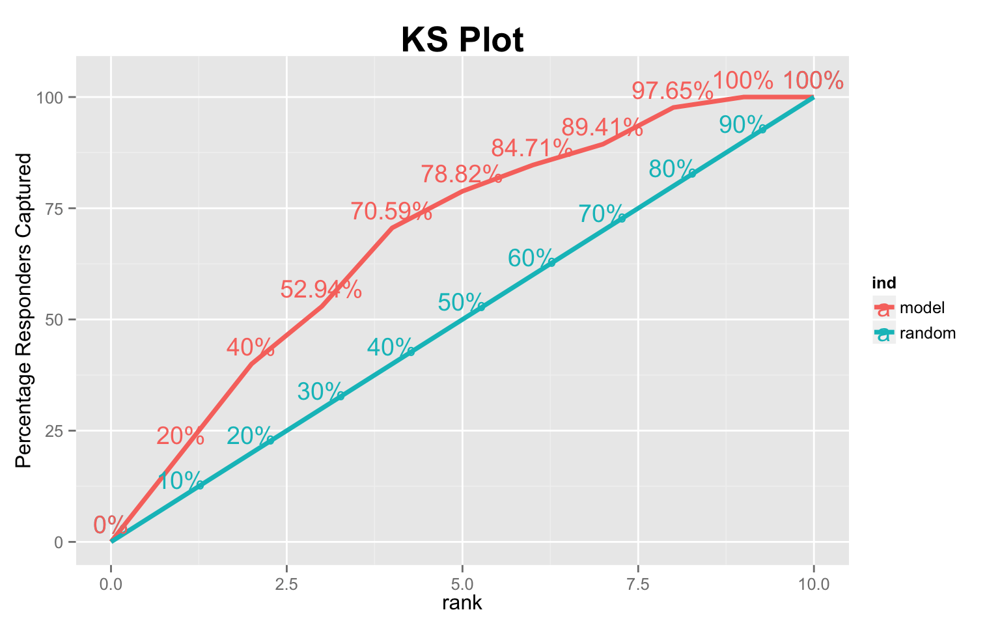

InformationValue
The functions in InformationValue package are broadly divided in following categories:
1. Diagnostics of predicted probability scores
2. Performance analysis
3. Functions that aid accuracy improvement
First, lets define the meaning of the various terms used in this document.
How to install
install.packages("InformationValue") # For stable CRAN version
devtools::install_github("InformationValue") # For latest dev version.Definitions of functions
Sensitivity, a.k.a True Positive Rate is the proportion of the events (ones) that a model predicted correctly as events, for a given prediction probability cut-off.
Specificity, a.k.a * 1 - False Positive Rate* is the proportion of the non-events (zeros) that a model predicted correctly as non-events, for a given prediction probability cut-off.
False Positive Rate is the proportion of non-events (zeros) that were predicted as events (ones)
False Negative Rate is the proportion of events (ones) that were predicted as non-events (zeros)
Mis-classification error is the proportion of observations (both events and non-event) that were not predicted correctly.
Concordance is the percentage of all-possible-pairs-of-predicted Ones and Zeros where the scores of actual ones are greater than the scores of actual zeros. It represents the predictive power of a binary classification model.
Weights of Evidence (WOE) provides a method of recoding the categorical x variable to continuous variables. For each category of a categorical variable, the WOE is calculated as:
$$WOE = ln\left(\frac{perc\ good\ of\ all\ goods}{perc\ bad\ of\ all\ bads} \right)$$
In above formula, goods is synonymous with ones, events, positives or responders and bads is synonymous with zeros, non-events, negatives or non-responders.
Information Value (IV) is a measure of the predictive capability of a categorical x variable to accurately predict the goods and bads. For each category of x, information value is computed as:
IV = (perc good of all goods − perc bad of all bads) * WOE
The total IV of a variable is the sum of IV’s of its categories. Here is what the values of IV mean according to Siddiqi (2006):
- Less than 0.02, then the predictor is not useful for modeling (separating the Goods from the Bads)
- 0.02 to 0.1, then the predictor has only a weak relationship.
- 0.1 to 0.3, then the predictor has a medium strength relationship.
- 0.3 or higher, then the predictor has a strong relationship.
Here is a sample MS Excel file that shows how to calculate WOE and Information Value.
KS Statistic is the maximum difference between the cumulative true positive and cumulative false positive rate. It is often used as the deciding metric to jusdge the efficacy of models in credit scoring. It can be computed using the ks_stat function
1.1 plotROC
The plotROC uses the ggplot2 framework to create the ROC curve and prints the AUROC inside. It comes with an option to display the change points of the prediction probability scores on the graph if you set the Show.labels = T.
> data('ActualsAndScores')
> plotROC(actuals=ActualsAndScores$Actuals, predictedScores=ActualsAndScores$PredictedScores)
You can also get the sensitivity matrix used to make the plot by turning on returnSensitivityMat = TRUE.
> sensMat <- plotROC(actuals = ActualsAndScores$Actuals, predictedScores = ActualsAndScores$PredictedScores,
+ returnSensitivityMat = TRUE)1.2. sensitivity or recall
Sensitivity, also considered as the ‘True Positive Rate’ or ‘recall’ is the proportion of ‘Events’ (or ‘Ones’) correctly predicted by the model, for a given prediction probability cutoff score. The default cutoff score for the specificity function unless specified by the threshold argument is taken as 0.5.
> sensitivity(actuals = ActualsAndScores$Actuals, predictedScores = ActualsAndScores$PredictedScores)
> # > [1] 1If the objective of your problem is to maximise the ability of your model to detect the ‘Events’ (or ‘Ones’), even at the cost of wrongly predicting the non-events (‘Zeros’) as an event (‘One’), then you could set the threshold as determined by the optimalCutoff() with optimiseFor='Ones'.
NOTE: This may not be the best example, because we are able to achieve the maximum sensitivity of 1 with the default cutoff of 0.5. However, I am showing this example just to understand how this could be implemented in real projects.
> max_sens_cutoff <- optimalCutoff(actuals = ActualsAndScores$Actuals, predictedScores = ActualsAndScores$PredictedScores,
+ optimiseFor = "Ones") # determine cutoff to maximise sensitivity.
>
> print(max_sens_cutoff) # This would be cut-off score that achieved maximum sensitivity.
>
> # > [1] 0.5531893
>
> sensitivity(actuals = ActualsAndScores$Actuals, predictedScores = ActualsAndScores$PredictedScores,
+ threshold = max_sens_cutoff)
> # > [1] 11.3. specificity
For a given probability score cutoff (threshold), specificity computes what proportion of the total non-events (zeros) were predicted accurately. It can alo be computed as 1 - False Positive Rate. If unless specified, the default threshold value is set as 0.5, which means, the values of ActualsAndScores$PredictedScores above 0.5 is considered as events (Ones).
> specificity(actuals = ActualsAndScores$Actuals, predictedScores = ActualsAndScores$PredictedScores)
> # > [1] 0.1411765If you wish to know what proportion of non-events could be detected by lowering the threshold:
> specificity(actuals = ActualsAndScores$Actuals, predictedScores = ActualsAndScores$PredictedScores,
+ threshold = 0.35)
> # > [1] 0.011764711.4. precision
For a given probability score cutoff (threshold), precision or ‘positive predictive value’ computes the proportion of the total events (ones) out of the total that were predicted to be events (ones).
> precision(actuals = ActualsAndScores$Actuals, predictedScores = ActualsAndScores$PredictedScores)
> # > [1] 0.53797471.5. npv
For a given probability score cutoff (threshold), npv or ‘negative predictive value’ computes the proportion of the total non-events (zeros) out of the total that were predicted to be non-events (zeros).
> npv(actuals = ActualsAndScores$Actuals, predictedScores = ActualsAndScores$PredictedScores)
> # > [1] 11.6. youdensIndex
Youden’s J Index (Youden 1950), calculated as
J = Sensitivity + Specificity − 1
represents the proportions of correctly predicted observations for both the events (Ones) and nonevents (Zeros). It is particularly useful if you want a single measure that accounts for both false-positive and false-negative rates
> youdensIndex(actuals = ActualsAndScores$Actuals, predictedScores = ActualsAndScores$PredictedScores)
> # > [1] 0.14117652.1. misClassError
Mis-Classification Error is the proportion of all events that were incorrectly classified, for a given probability cutoff score.
> misClassError(actuals = ActualsAndScores$Actuals, predictedScores = ActualsAndScores$PredictedScores,
+ threshold = 0.5)
> # > [1] 0.42942.2. Concordance
Concordance is the percentage of predicted probability scores where the scores of actual positive’s are greater than the scores of actual negative’s. It is calculated by taking into account the scores of all possible pairs of Ones and Zeros. If the concordance of a model is 100%, it means that, by tweaking the prediction probability cutoff, we could accurately predict all of the events and non-events.
> Concordance(actuals = ActualsAndScores$Actuals, predictedScores = ActualsAndScores$PredictedScores)
> # > $Concordance > [1] 0.8730796 > > $Discordance > [1] 0.1269204 > > $Tied
> # > [1] 0 > > $Pairs > [1] 72252.3. somersD
somersD computes how many more concordant than discordant pairs exist divided by the total number of pairs. Larger the Somers D value, better model’s predictive ability.
$$Somers D = \frac{Concordant Pairs - Discordant Pairs}{Total Pairs} $$
> somersD(actuals = ActualsAndScores$Actuals, predictedScores = ActualsAndScores$PredictedScores)
> # > [1] 0.74615922.4. ks_stat
ks_stat computes the kolmogorov-smirnov statistic that is widely used in credit scoring to determine the efficacy of binary classification models.
> ks_stat(actuals = ActualsAndScores$Actuals, predictedScores = ActualsAndScores$PredictedScores)
> # > [1] 0.61182.5. ks_plot
ks_plot plots the lift is capturing the responders (Ones) against the the random case where we don’t use the model. The more curvier (higher) the model curve, the better is your model.
> ks_plot(actuals=ActualsAndScores$Actuals, predictedScores=ActualsAndScores$PredictedScores)
3.1. optimalCutoff
optimalCutoff determines the optimal threshold for prediction probability score based on your specific problem objectives. By adjusting the argument optimiseFor as follows, you can find the optimal cutoff that: 1. Ones: maximizes detection of events or ones 2. Zeros: maximizes detection of non-events or zeros 3. Both: control both false positive rate and false negative rate by maximizing the Youden’s J Index. 4. misclasserror: minimizes misclassification error (default)
> optimalCutoff(actuals = ActualsAndScores$Actuals, predictedScores = ActualsAndScores$PredictedScores) # returns cutoff that gives minimum misclassification error.> optimalCutoff(actuals = ActualsAndScores$Actuals, predictedScores = ActualsAndScores$PredictedScores,
+ optimiseFor = "Both") # returns cutoff that gives maximum of Youden's J Index
> # > [1] 0.6431893By setting the returnDiagnostics=TRUE you can get the sensitivityTable that shows the FPR, TPR, YOUDENSINDEX, SPECIFICITY, MISCLASSERROR for various values of cutoff.
> sens_table <- optimalCutoff(actuals = ActualsAndScores$Actuals, predictedScores = ActualsAndScores$PredictedScores,
+ optimiseFor = "Both", returnDiagnostics = TRUE)$sensitivityTable3.2. WOE
Computes the Weights Of Evidence (WOE) for each group of a given categorical X and binary response Y.
> WOE(X = SimData$X.Cat, Y = SimData$Y.Binary)3.3. WOETable
Generates the WOE table showing the percentage goods, bads, WOE and IV for each category of X. WOE for a given category of X is computed as:
$$WOE = ln(\frac{perc.Good}{perc.Bad}) $$
> options(scipen = 999, digits = 2)
> WOETable(X = SimData$X.Cat, Y = SimData$Y.Binary)3.4. IV
Compute the information value of a given categorical X (Factor) and binary Y (numeric) response. The information value of a category of X is calculated as:
IV = (perc.Good − perc.Bad) * WOE
The IV of the categorical variables is the sum of information value of its individual categories.
options(scipen = 999, digits = 4)
IV(X=SimData$X.Cat, Y=SimData$Y.Binary)
#> 1] 0.162
#> attr(,“howgood”)
#> [1] “Highly Predictive”“He who gives up code safety for code speed deserves neither.”
For more information and examples, visit rstatistics.net